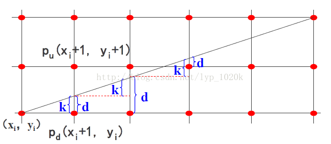
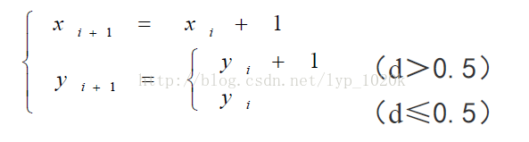
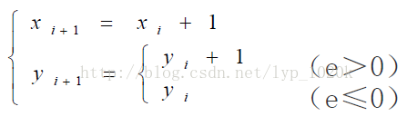
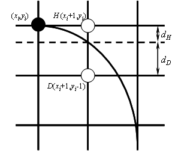

使用DDA算法、Bresenham算法和中点分割算法实现直线的绘制，以及Bresenham圆与圆弧生成算法
数值微分分析法( Digital Differential Analyzer, DDA)，用数值方法求解微分方程。
在该算法中，我们根据已知线段的两个端点，可以得到x轴和y轴方向上的增长量Tx和Ty。令n = max( Tx, Ty)，然后可以得到该直线段的增长步长dx = Tx / n , dy = Ty / n ，在这种情况下，一个步长为1，另一个步长小于1。反应了在x轴和y轴上的增长速度。然后一直绘制下去，便能够得到该直线段。
实现代码如下~
1 2 3 4 5 6 7 8 9 10 11 12 13 14 15 16 17 18 19 20 21 22 23 24 25 26 27 28 29 30 31 32 void CcgPHDDrawLineView::DDAline(int x1, int y1, int x2, int y2, CDC * pDC){ int dx, dy, n; float xinc, yinc, x, y; float averageError = 0 ; CcgPHDDrawLineDoc *pDoc = (CcgPHDDrawLineDoc*)GetDocument(); dx = x2 - x1; dy = y2 - y1; if (abs (dx)>abs (dy)) n = abs (dx); else n = abs (dy); xinc = (float )dx / n; yinc = (float )dy / n; x = (float )x1; y = (float )y1; for (int i = 1 ; i <= n; i++) { pDC->SetPixel(int (x + 0.5 ), int (y + 0.5 ), RGB(255 ,0 ,0 )); averageError += (fabs ((y2 - y1) * x + (x2 - x1) * y + ((x2 * y1) - (x1 * y2)))) / (sqrt (pow (y2 - y1, 2 ) + pow (x2 - x1, 2 ))); x += xinc; y += yinc; } averageError /= n; pDoc->m_averageError += averageError; pDoc->m_error = sqrt (pow (y - y2, 2 ) + pow (x - x2, 2 )); }
在已知一个绘制点(x,y)之后，继续向后绘制，我们让x每次增长1，但是y的坐标根据其是靠近该点所处的单元格的距离来决定，如果离上边近则y加1，如果离下边近则还是y。


可以看出d = dy / dx，然后我们再求下一次的误差dd的计算：
当选择Pd时，下一次的误差dd = dy / dx * 2 = d + dy / dx。
当选择Pu时，下一次的误差dd = dy / dx * 2 - 1 = d + dy / dx - 1;
我们将d与0.5比较，改为和0比较~，然后用e来表示，这样可以看出e 的初值为dy / dx - 1/2 = (2dy - dx) / 2dx。

然后我们可以进一步优化e，将上式两边同时乘以2dx，对判断没有影响，那么有 e = 2dy - dx。然后下一次增长的时候：
y方向增量为0。e += 2dy。
y方向增量为1。e = e + 2dy - 2dx。
不过上面讨论的情况只适用于第一八分圆域内（x正增长，y正增长）。对于全部适用的情况，我们首先需要判断直线的增长方向，来确定x和y时正增长还是反向增长。其基本原理就是这些，也比较简单~，直接贴代码 ~
1 2 3 4 5 6 7 8 9 10 11 12 13 14 15 16 17 18 19 20 21 22 23 24 25 26 27 28 29 30 void CcgPHDDrawLineView::Bline(int x1, int y1, int x2, int y2, CDC * pDC){ int dx, dy, xSign, ySign; int interChange = 0 , e; int x, y; dx = abs (x2 - x1); dy = abs (y2 - y1); e = 2 * dy - dx; xSign = (x2 > x1) ? 1 : -1 ; ySign = (y2 > y1) ? 1 : -1 ; if (dx < dy) { int exc; exc = dx; dx = dy; dy = exc; interChange = 1 ; } x = x1; y = y1; for (int i = 0 ; i <= dx; i++) { pDC->SetPixel(x, y, RGB(255 , 0 , 0 )); if (e >= 0 ) { e -= 2 * dx; if (interChange) x += xSign; else y += ySign; } e += 2 * dy; if (interChange) y += ySign; else x += xSign; } }
emm这个算法比较简单，直接使用递归实现~
已知当前线段的两个端点，然后找到线段的中点，绘制该点；
中点将线段划分为两个子线段；
将两个子线段，递归调用。
实现代码如下~
1 2 3 4 5 6 7 8 9 10 11 12 13 14 15 16 17 18 19 int CcgPHDDrawLineView::Midpoint(int x1, int y1, int x2, int y2, CDC * pDC){ float averageError = 0 ; CcgPHDDrawLineDoc *pDoc = (CcgPHDDrawLineDoc*)GetDocument(); pDoc->m_averageError = 0 ; float xMid = (x1 + x2) / 2 , yMid = (y1 + y2) / 2 ; if (abs (x2 - x1) < 2 && abs (y2 - y1) < 2 ) return 1 ; pDC->SetPixel( int (xMid+0.5 ), int (yMid+0.5 ), RGB(255 , 0 , 0 )); m_midError.time ++; m_midError.error += (fabs (m_midError.y2 * (xMid + 0.5 ) + m_midError.x2 * (yMid + 0.5 ))) / (sqrt (pow (m_midError.y2, 2 ) + pow (m_midError.x2, 2 ))); Midpoint(x1, y1, xMid, yMid, pDC); Midpoint(xMid, yMid, x2, y2, pDC); }
不过通过绘制效果能看出来，很一般，，，，
该圆弧算法和直线段绘制算法的思路基本一致。不太一样的地方就是在绘制圆弧的时候要考虑周边的三个顶点。

在该图所示， 我们需要考虑它右侧、下侧以及右下侧的三个顶点，然后从这三个顶点中选择一个作为下一个绘制顶点。这时候判断的依据是该顶点距离圆心的距离~
同理，我们也需要根据绘制圆弧的所在象限，决定x和y的增长方向。
实现代码如下~
1 2 3 4 5 6 7 8 9 10 11 12 13 14 15 16 17 18 19 20 21 22 23 24 25 26 27 28 29 30 31 32 33 34 35 36 void CcgPHDDrawLineView::BresenhamArc(float a, float b, float r, CDC * pDC){ int x1, y1, x2, y2, xFlag = 0 , yFlag = 0 ; float PI = 3.1415926 ; a = (a*PI) / 180 ; b = (b*PI) / 180 ; x1 = r * cos (a); y1 = r * sin (a); x2 = r * cos (b); y2 = r * sin (b); float x = x1, y = y1, r1, r2, r3, xtemp, ytemp; while (sqrt (pow (y - y2, 2 ) + pow (x - x2, 2 )) > 1 ) { x >= 0 ? yFlag = 1 : yFlag = -1 ; y >= 0 ? xFlag = -1 : xFlag = 1 ; pDC->SetPixel(x, -y, RGB(255 , 0 , 0 )); xtemp = x + xFlag; ytemp = y; r1 = abs (sqrt ( (xtemp*xtemp + ytemp*ytemp) ) - r); xtemp = x + xFlag; ytemp = y + yFlag; r2 = abs (sqrt ((xtemp*xtemp + ytemp*ytemp)) - r); xtemp = x; ytemp = y + yFlag; r3 = abs (sqrt ((xtemp*xtemp + ytemp*ytemp)) - r); if (r1 < r2 && r1 < r3) { x += xFlag; } else if (r2 < r1 && r2 < r3) { x += xFlag; y += yFlag; } else { y += yFlag; } } }